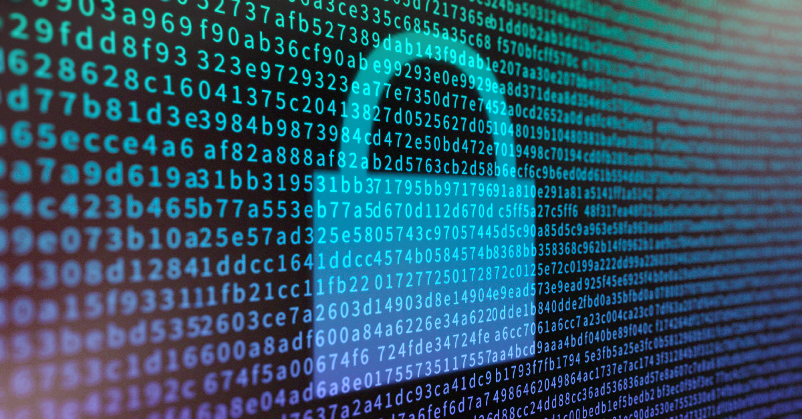
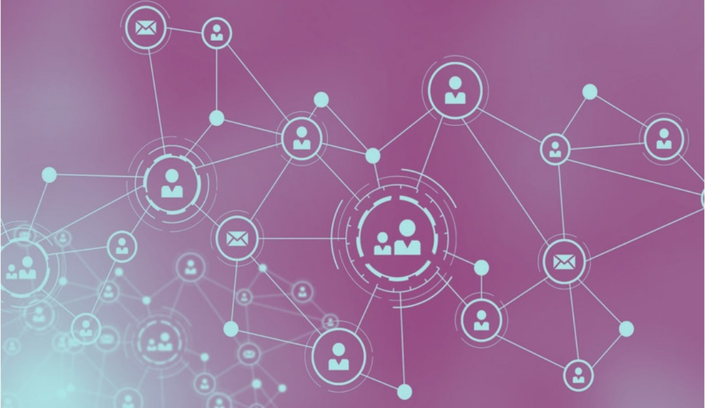

"As the world is increasingly interconnected, everyone shares the responsibility of securing cyber space"
- Newton Lee
With the exceptionally quick evolution of technology, computers are critical to maintaining a secure set of systems
that stop institutions and even just normal members of the public from falling victim to cyber crime. The development
of computer science means scientists and mathematicians can continue to find newer and better ways of securing data and
the internet.
Hover over the images to learn about the different was Computer Science has helped the world stay safe online.
Network components can now be constructed to ensure firewalls and other browser isolation systems can be
securely configured allowing for a strong perimeter security. For national institutions, such as NHS, GCHQ and other civil service groups
this very important.

Encryption and cryptography has been greatly improved by the addition of computers into the field. In the past,
messages and data could only be encrypted via mechanical machines at best, otherwise, they were encoded and decoded by hand.

Communication has seen exceptional development. Prior to today there was no way of sending secure messages besides
manually encrypting. Thanks to computer science, almost all forms of communication is secure and safe, regardless of how far you're calling from.
The field is far from done developing. Newer emerging technology, such as quantum computer science, could pave the way to even more secure
world. Since quantum computers are even stronger than today's fastest supercomputer, their encryption algorithms could be utterly undefeatable.
Timeline of Computer Science in Security
But technology hasn't always been this enhanced. Only in recent years has computer science played such a fundamental part in
keeping data secure and preventing malware from infecting computers and causing system failures. The field of cyber security first started when the internet had even been invented.
Hover over the timeline to read about the evolution of security in computer science.
1960s
In the era of no internet, security was more physical. Passwords and multiple layers of security
protection were added to devices.
1971
The Advanced Research Projects Agency Network (ARPANET) was founded and researcher Bob Thomas created a computer
program able to move the network, which developed to beome self replicating, creating the first
computer worm.
1973
Companies managing their branches with networks needed a secure way to do so, which the RSA encryption algorithm provided
them with. This was the first asymmetric encryption system to be published.
1990
With the internet now available to everyone, network security threats increased so firewalls and antivirus programs
were produced on a mass basis.
2010
This era saw the most major breaches: Snowden & the NSA, the Yahoo Hack, WannaCry, the first ransomworm attack"
2020
Researchers are now exploring ways to implement quantum computers into network science, which would pave the way
for an even more secure world.
STATISTICS
During the pandemic, there was a 44% rise in ransomware attacks across the health sector alone, while other sectors faced a 22% increase in attacks.
With 46% of the working population being asked to work from home, communication and security infrastructure proved more important than ever.
Computer sciencenst, programmers and mathematicians came together to develop infection control systems such as the NHS track and trace app.
WORK FORCE
With the exponential rise of the use of technology in many daily activities, the amount of programmers and computer scientists needed to maintain all
technology means that computational and cyber security has also opened up the job market. According to Gov.uk, a total of 393,257 cyber security-related
job postings over the past 3 years, ranging from security specialists to ethical hackers. With all the jobs openings, safer systems and more efficient life-styles,
the use and implementation of computer science in security makes our future look very promising.
AUTHOR SPACE: hello whoever is writing this - I've left you this little box to include my author information.
Thanks bestie.